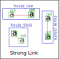
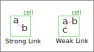
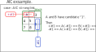
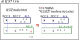

Link
リンクは、様々な数独解析アルゴリズムの基になります。ここで定義するリンクを用いて、ネットワーク型のアルゴリズムを組み立てます。
ここでは全般的な理解のしやすさを優先し、正確性は二の次の”簡略表現”となっています。
あたたかな気持ちと、まなざしと、理解力に期待します。
(1) セル間 リンク
最も単純なリンクは、セル間リンクです。
セル間リンクには、強いリンクと弱いリンクの2種類があります。
- 強いリンクは、1つのHouse内に着目数字 "a" をもつセルが2個ある状態です。
以下の左図は、行・列・ブロックのHouseにある強いリンクを示しています。
強いリンクは、一方のセルについて "aである"aでない" のいずれでも、他方のセルに "aでない"/"aである" と伝播します。
- 弱いリンクは、1つのHouse内に着目数字"a"をもつセルが3個以上ある状態です。
以下の右図は、行・列・ブロックのHouseにある弱いリンクを示しています。
弱いリンクでは、あるセルが "aである" の場合に残りのセルは "aでない" と伝播します。強いリンクは弱いリンクでもあります。


(2) セル内 リンク
セル内リンクも、最も単純なリンクの一つです。
セル内リンクは、1つのセルの数字のリンクです。要素の数が2なら強いリンク、3以上なら弱いリンクです。

(3) ALS リンク
ALSは、LokedSetより数字が1多い状態です。ALSの1要素数字がリンクによって否定的に確定したとき、ALSはLockedSetに変わります。 すなわち、外部の要素とALSが弱いリンクを形成した状態です。

(4) AIC リンク
セル群では、セル配置を延長する方向(House)から制約が伝わり、セル配置を延長する方向に制約が伝わります。
リンクのセル群Bが単独セルの場合には制約は複数の方向(複数のHouse)に伝わります。

(4) ALS_XZ リンク
ALS_XZリンクは、様々なリンクを探る最初の試みとして、試験的に開発しました。
ALS_XZは2つのALSがRCCで連結した状態です。ALS_XZ doubly_linkedは、RCCが2個あるケースで、これはLockedしています。
つまり、2つのRCCをもつ A2LS,ALS の組は、リンクになります。

なお、A2LSは House内のセル群で n個のセルに (n+2)個の候補数字がある状態です。GNPX ver5では AnLSがベースクラス、ALSは派生クラスと定義しています。
Finned
数独解法では、Fin付きのセル群がしばしば現れます。たとえば、Finned LockedSet, Finned Fish, Finned ALS(=A2ls),
Finned ALS-XZ singlylinked(=n=1のSueDeCoqEx)です。
Fin付きのセル群について、次のことが言えます。
- Fin付き Locked は リンクになる。
- セル間の Strong/week リンク は、Fin付のセル である。